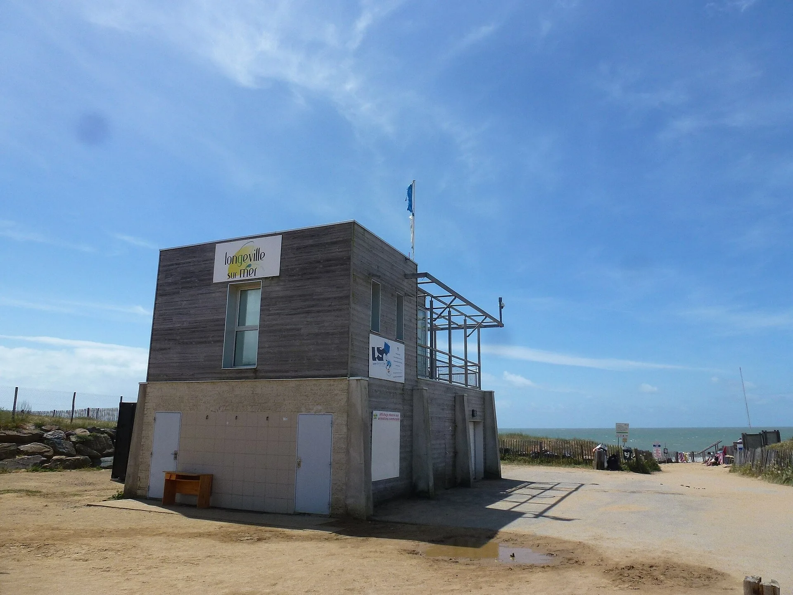

Bud Bud — Les Conches, Longeville-sur-Mer
Vendée, France · surf

Beach break de sable aux Conches, au sud de la baie de Longeville-sur-Mer (accès 16 ou 17 par le chemin de la Forêt). Il casse à gauche et à droite, mieux à marée moyenne à haute. Selon Surf-report et Mondo Surf, c’est l’un des meilleurs beach breaks du coin, avec des vagues parfois tubulaires. Il vise les surfeurs de niveau intermédiaire à confirmé.
- Lieu
- Vendée, France
- Niveau
- Intermédiaire
- Activités
- surf
- Type d'eau
- Mer / océan
- Coordonnées
- 46.38, -1.49 (position approximative du secteur)
Dangers à connaître
- Vagues puissantes quand la houle monte, plus qu’aux Conches voisins (Mondo Surf) : un guide local les décrit comme un vrai défi.
- Marée basse risquée : la vague casse sur très peu d’eau (plages.tv).
- Monde dans l’eau en été, avec un peu de localisme signalé (Mondo Surf).
Le conseil d'Ocean Buddy
Cherche une houle d’ouest ou de sud-ouest avec un vent de nord-est à est, surtout en automne et en hiver. Les bancs de sable bougent : regarde la mer avant d’entrer.
Ouvrir dans Ocean Buddy Télécharger sur l'App Store
Source : Fiche Ocean Buddy · octobre 2026 · d’après Surf-report, Mondo Surf, plages.tv et in-vendee.com (Bud Bud) · à vérifier localement.